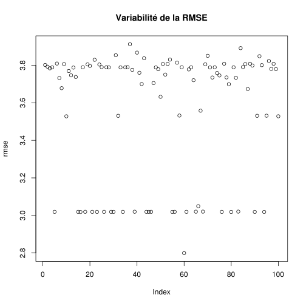
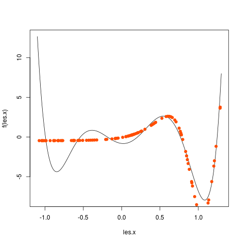
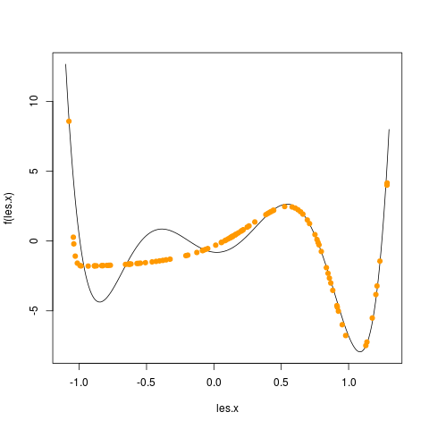
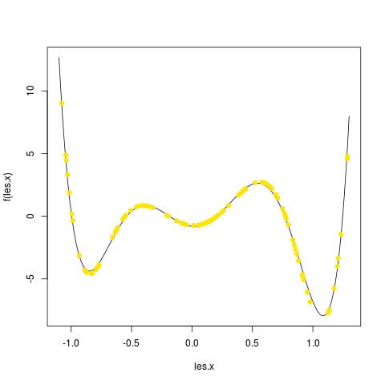
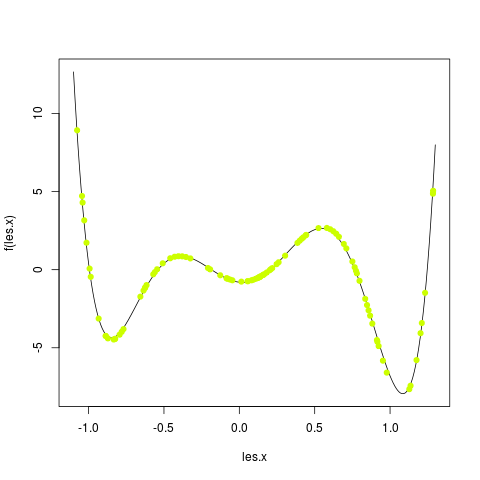
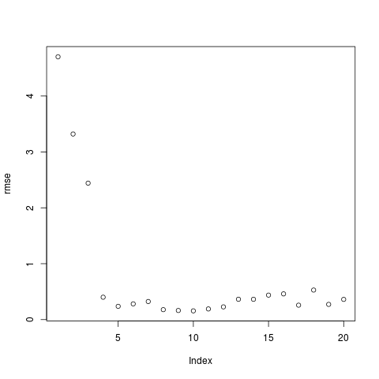
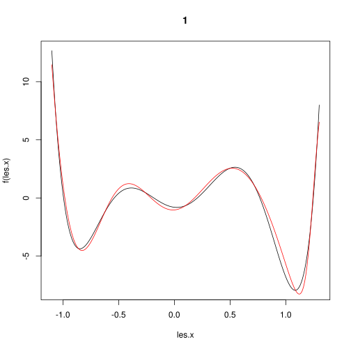

Perceptron multi-couches
Ce TP consiste à faire quelques expérimentations avec le perceptron multi-couches (PMC). L'objectif est de compendre le fonctionnement d'un PMC. On utilise la bibliothèque nnet de R qui permet de manipuler des perceptrons à une couche cachée et un neurone en sortie. La fonction d'activation des neurones de la couche cachée est la fonction logistique.
On s'intéresse à une tâche de régression, c'est-à-dire une tâche d'apprentissage supervisé dans laquelle l'étiquette est un nombre réel.
Pour pouvoir utiliser cette bibliothèque, une fois R lancé, vous tapez :
library (nnet)
Entraînement et utilisation d'un PMC
Dans cette section, j'explique tout ce qui permet de réaliser la suite du TP.
Apprentissage des poids
Supposons que nous ayons les variables suivantes :
- N qui est le nombre d'exemples
- P qui est le nombre d'attributs/composantes pour chaque exemple
- x une matrice contenant les P attributs des N exemples.
- x [i, j] est le jè attribut de l'exemple i.
- La ligne i (notée x [i, ] en R) contient les P attributs de la donnée i.
- La colonne j (notée x [, j] en R) contient la valeur de l'attribut j pour les N exemples.
- y un vecteur contenant l'étiquette de chacun des exemples. y [i] est l'étiquette de l'exemple x [i, ].
Pour apprendre les poids d'un PMC, on fera alors :
pmc <- nnet (x, y, size = 5, linout = TRUE, maxit = 100, trace = F)
- x est la matrice contenant les exemples. Noter qu'un vecteur est une matrice ayant une seule colonne.
- y est le vecteur des sorties attendues pour chacun des exemples.
- size = 5 signifie que l'on utilise un PMC avec une couche cachée comprenant 5 neurones.
- linout = TRUE indique que la fonction d'activation du neurone de sortie est la fonction identité.
- maxit = 100 indique que le calcul des poids se fera en faisant passer l'ensemble des exemples d'entraînement 100 fois dans le réseau et en rétro-propageant les erreurs.
- trace = F élimine l'affichage de la progression de l'apprentissage des poidss.
Une fois l'apprentissage réalisé, pmc contient le PMC qui a été entraîné.
L'entraînement s'arrête si l'un de ces 3 critères est rempli :
- en fonction du paramètre maxit expliqué ci-dessus.
- avec le paramètre abstol = 1e-5 (1e-5 est juste une valeur donnée en exemple, on met ce que l'on veut), l'entraînement s'arrête quand l'erreur de prédiction sur l'ensemble des exemples d'entraînement est inférieure à ce seuil. Si on ne la spécifie pas, cette valeur est 10-4.
- avec le paramètre reltol = 1e-6 (1e-6 est juste une valeur donnée en exemple, on met ce que l'on veut), l'entraînement s'arrête quand l'erreur de prédiction sur l'ensemble des exemples d'entraînement entre deux itérations successives ne diminue pas d'un facteur supérieur à 1-la valeur indiquée. Si on ne la spécifie pas, cette valeur est 10-8.
Il existe d'autres paramètres à la fonction nnet, mais ceux mentionnés ici suffisent pour ce TP.
Prédiction à l'aide d'un PMC
Une fois l'entraînement réalisé, on peut utiliser le PMC entraîné pour prédire l'étiquette de n'importe quelle donnée. Supposons que nous ayons dans la matrice xx un ensemble de données pour lesquelles on veut prédire leur étiquette. Ces données doivent avoir le même nombre de composantes que celles avec lesquelles on a fait l'entraînement, donc P. En faisant :
xx.prediction <- predict (pmc, xx, type = "raw")
On obtiendra dans le vecteur xx.prediction les étiquettes de chacune des données présentes dans xx. Pour cela, chaque donnée est mise en entrée du PMC et la sortie du PMC est calculée.
Application
Fonction en 1 dimension
On cherche à mieux comprendre comment un perceptron multi-couches apprend une fonction. Pour pouvoir illustrer graphiquement cet apprentissage, on s'intéresse à l'apprentissage d'une fonction à une seule variable.
Dans tout ce qui suit concernant une fonction à 1 dimension, on utilise les 100 exemples d'entraînement qui sont disponibles en suivant ce lien.
Vous les chargez dans R en tapant :
train <- as.matrix (read.table ("https://philippe-preux.github.io/ensg/miashs/l3-rnf/tps/pmc/exemples.train", header = T))
x <- train [, 1, drop = F]
y <- train [, 2]
On utilise un ensemble de 100 exemples de test qui sont disponibles en suivant ce lien.
Vous les chargez dans R en tapant :
test <- as.matrix (read.table ("https://philippe-preux.github.io/ensg/miashs/l3-rnf/tps/pmc/exemples.test", header = T))
x.test <- test [, 1, drop = F]
y.test <- test [, 2]
Variabilité des performances d'une architecture donnée
Tout d'abord, ayant choisi une architecture de réseau, on se demande si un apprentissage des poids donne toujours le même résultat, ou à peu près le même.
- Entraîner un PMC ayant 5 neurones cachés pendant au maximum 1000 itérations avec les exemples d'entraînement.
- Mesurer la RMSE de ce réseau sur les exemples de tests. Pour cela, on calcule la valeur prédite pour chacun des exemples présent dans x.test et on compare cette valeur à celle qui doit être prédite qui se situe dans y.test. Si la valeur prédite par le PMC pour chaque donnée est dans le vecteur y.prédite, la RMSE se calcule par :
RMSE <- sqrt (sum ((y.test - y.prédite)^2) / nrow (x.test)) - Répéter cela 100 fois. Calculer et stocker la RMSE de chacun des 100 réseaux.
On a besoin d'un vecteur pour stocker les 100 RMSE. Si on écrit dans R
RMSE <- rep (0, times = 100)
on crée un vecteur dénommé RMSE qui contient 100 valeurs 0. Ensuite, pour accéder à l'élément i du vecteur, on écrit RMSE [i]. - Quels sont la moyenne et l'écart-type de ces 100 RMSE. Faire un graphique de ces 100 RMSE.
Vous devez obtenir quelque chose comme ce qui suit :

Qu'en pensez-vous ?
Combien de neurones cachés ?
On va faire varier le nombre de neurones cachés pour voir l'effet que cela a sur la fonction qui est estimée et aussi pour déterminer un nombre de neurones cachés ayant les meilleures performances.
Pour cela, vous allez faire une boucle pour tester des PMC ayant de 1 à 20 neurones cachés. Pour chaque nombre de neurones cachés, vous faites un graphique avec tous les exemples et les valeurs prédites dans une autre couleur. Prenez le temps d'observer les changements et comment la fonction est, en général, de mieux en mieux approchée quand le nombre de neurones cachés augmente. Par exemple, j'ai obtenu les graphiques en utilisant 1, puis 2, puis 3, ... jusque 5 neurones cachés :
 |
 |  |  |  |
Chacun de ces graphiques est obtenu comme suit :
# on commence par tracer la fonction qui doit être apprise
f <- function (x)
{
x <- x * 4
return (1/100 * (x**6-2*x**5-26*x**4+28*x**3+145*x**2-26*x-80))
}
les.x <- seq (-1.1, 1.3, by = 0.01)
plot (les.x, f (les.x), type = "l")
# ensuite on ajoute la prédiction des points tests
# on suppose que le PMC a été mis dans l'objet nommé pmc
y.predite <- predict (pmc, test [, 1, drop = F], type = "raw")
points (x.test, y.predite, col = "red")
Stockez la RMSE obtenue pour chaque nombre de neurones cachés. Nommons rmse le vecteur contenant ces 20 valeurs. Par exemple, rmse [1] contiendra la RMSE du PMC ayant un neurone caché, rmse [2] contiendra la RMSE du PMC ayant deux neurones cachés et ainsi de suite.
Il faut conserver chacun des PMC pour pouvoir ensuite utiliser le meilleur. Pour cela, vous stockerez les 20 PMC dans une liste, en faisant de la manière suivante :
...
liste.des.pmc <- list ()
for (size in 1:20) {
...
liste.des.pmc [[size]] <- nnet (..., size = size, ...)
...
rmse [size] <- ...
}
On utilise une liste qui contient les 20 PMC. On accède au iè élément d'une liste avec la notation [[i]]. On remarque qu'il y a deux crochets pour une liste, un seul pour un vecteur ou une matrice.
Le meilleur PMC est-il vraiment celui-là ? Faites un plot (rmse). Que constatez-vous ?
Vous obtenez un graphique qui ressemble à celui-ci :

Le meilleur réseau est celui qui est au niveau du coude : ici avec 5 neurones cachés. C'est donc le PMC liste.des.pmc [[5]].
Comme on l'a vu plus haut, la RMSE d'un PMC ayant un nombre de neurones cachés donné est variable. Aussi, tel que nous venons de le faire, le résultat varie d'une exécution à la suivante. Il faudrait donc refaire cette exercice en construisant plusieurs (100) PMC de chaque taille et ne conserver que le meilleur dans la liste des PMC.
Influence du bruit
Jusqu'à maintenant, nous avons travaillé sur un jeu de données non bruitées : l'étiquette d'une donnée x est exactement f(x). Pour des données bruitées, il y a un écart entre y et f(x) ; cet écart est aélatoire. Généralement, on suppose qu'il est distribué normalement, avec une moyenne nulle. Nous faisons cet hypothèse dans cet exercice. Le bruit est plus ouo moins grand ; on le caractérise par son écart-type.
Quelle est l'influence de ce bruit sur le réseau de neurones ? La fonction à apprendre est la même que précédemment, mais les données sont bruitées. Refaites les mêmes manipulations en utilisant ces fichiers d'exemples à la place :
Dans chacun des 4 cas, vous prédisez la sortie du meilleur PMC pour tous les points compris entre -1,1 et 1,3 par par de 1 centième. Ces points sont dans l'objet créé précédemment dénommé les.x.
Vous faites un graphique représentant la fonction qui doit être apprise (en noir) et la fonction qui a été apprise (en rouge).
Pour le bruit 1, la plus faible RMSE est obtenue avec 4 neurones cachés. j'obtiens alors le graphique suivant :

Fonction en 2 dimensions
Refaites rapidement le même genre d'étude sur un jeu de données correspondant à une fonction bidimensionnelle.
Les données sont disponibles en suivant ce lien.
Vous chargerez les données comme suit :
fct2D <- as.matrix (read.table ("fct2D.txt", header = T))
x <- fct2D [, 1:2]
y <- fct2D [, 3]
x est une matrice ayant 1640 lignes (données) de 2 colonnes (P = 2 attributs par donnée) ; à chaque donnée est associée une étiquette dans le vecteur y. On crée le jeu d'entraînement en prenant au hasard 80% des exemples ; le jeu d'exemples de test est constitué des 20 % restant. On procède comme suit :
indice.train <- sample (1640, 0.8 * 1640)
x.train <- x [indice.train, ]
y.train <- y [indice.train]
x.test <- x [- indice.train, ]
y.test <- y [- indice.train]
- Combien de neurones cachés donnent le meilleur résultat ?
Suite de l'exercice précédent.
- On a découpé l'ensemble des exemples en 80-20 (80% pour l'entraînement, 20% pour le test). Tester d'autres combinaisons (60, 70, 90, 95 % d'exemples pour l'entraînement) et voyez s'il y a une répartition qui donne une meilleure RMSE.
- On peut aussi ajouter des connexions directes entre les entrées du réseau et la sortie ; à ces connexions sont également associés des poids. Pour ajouter ces connexions, il faut spécifier l'argument skip=T lors de l'appel à nnet(). Déterminez le nombre de neurones cachés qui donne les meilleurs résultats avec ces connexions directes en plus.